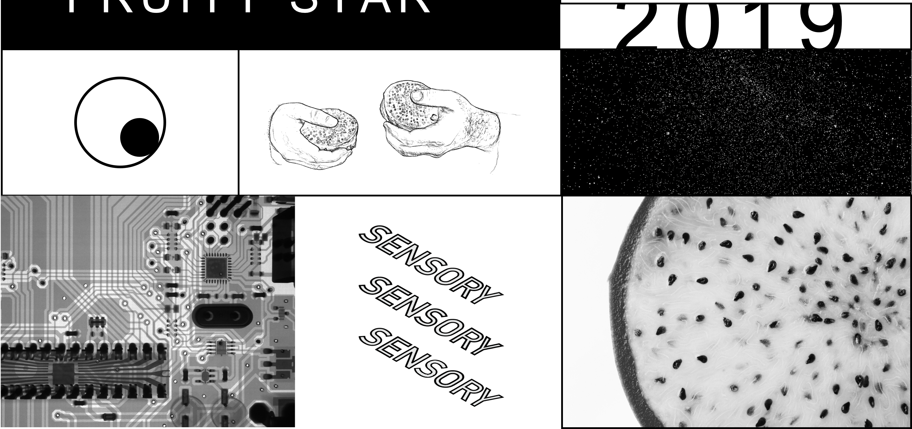

Fruit Interface Interactive Game
1. INTRODUCTION
In the age of digital information, we live more with electronic devices and neglect objects that bring us real sensations, a starry sky, a fruit, or a voice from the depths of our souls. Through the physical user interface of the fruit, we perceive the link between the real world and space-time in touch. So we have designed a game to bring these things together. Touch the fruit with your hands to complete the constellation.
2. WHAT WE USE
We used a fruit that conducts electricity, the dragon fruit. Fruits can generate electric currents because they contain electrolytes such as citric acid which, when the conditions are met, can generate circuit currents. We will take another wire in hand to achieve a circuit.
3. HOW TO PLAY
There are three main steps to complete the connection of stars in this tangible fruit interface game.
- Keeping track of the stars Falling time
- When the star falls exactly to the specified location
- Complete galactic links with realistic fruit touch